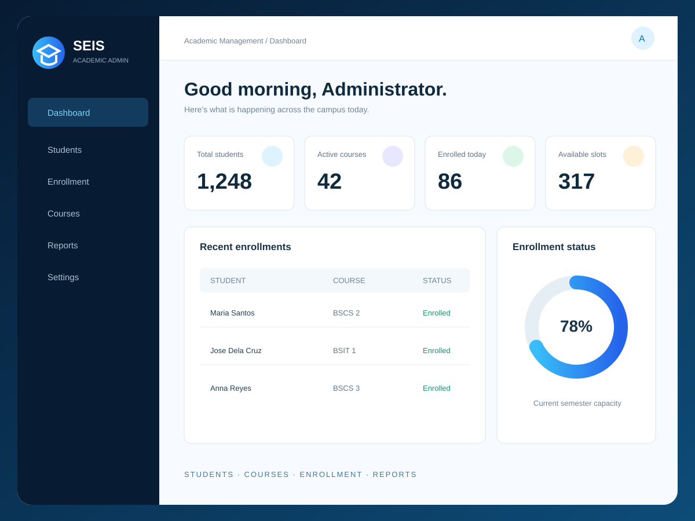
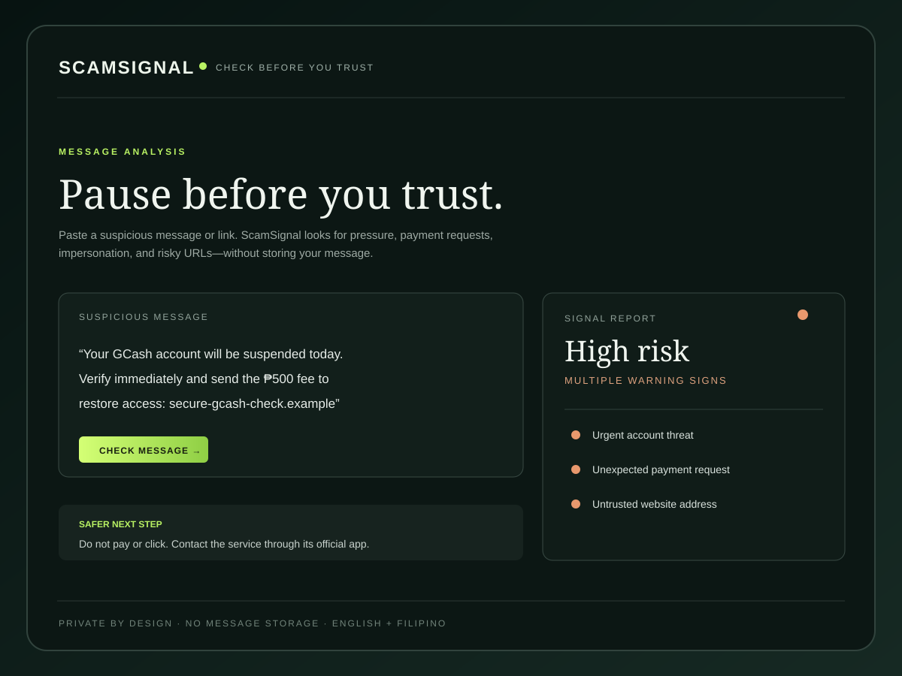
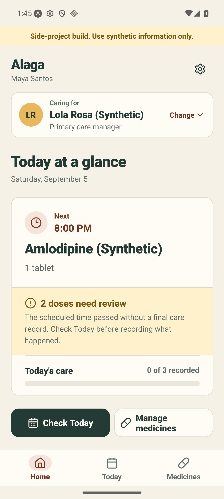
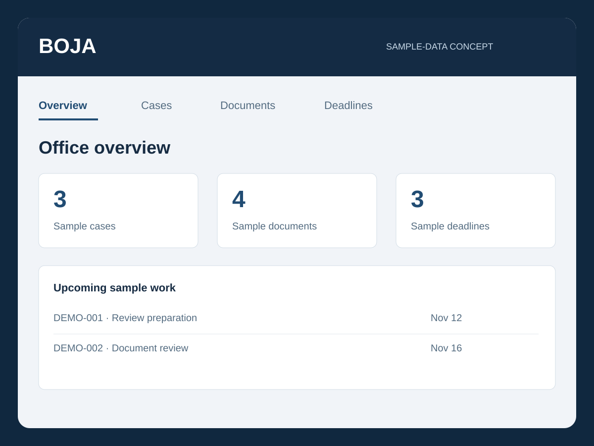
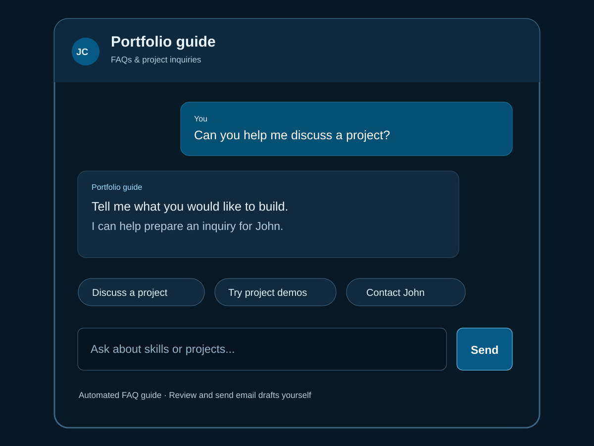
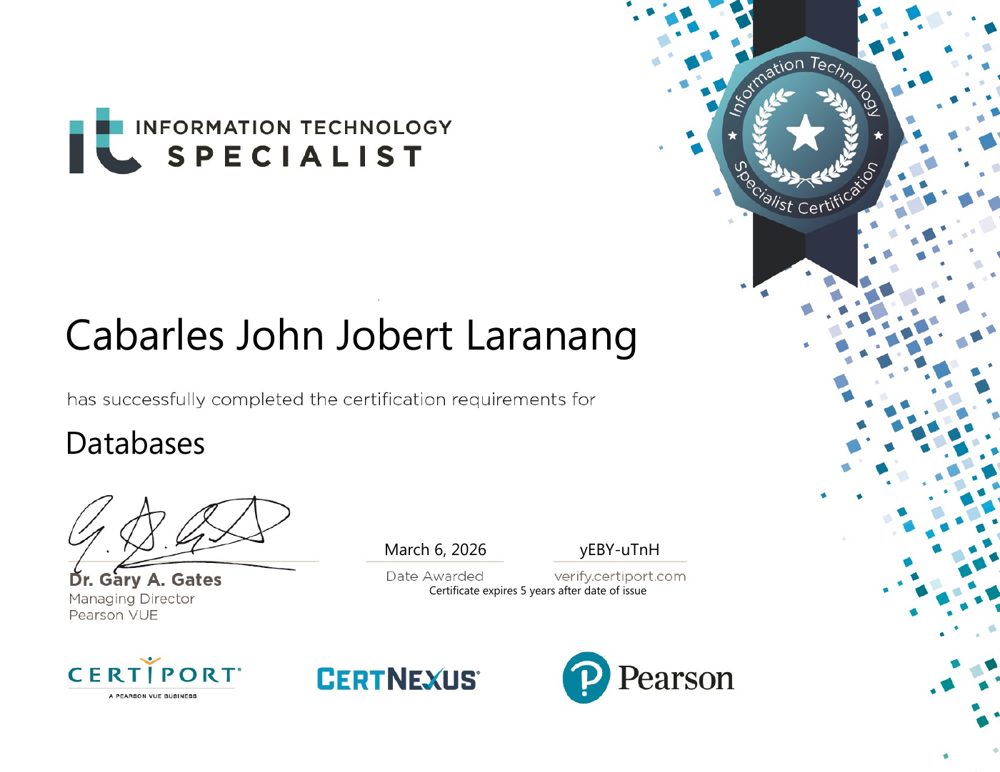

WEB
INTERFACES.
I use HTML, CSS, JavaScript, and Bootstrap to structure content, create responsive layouts, and make interactions easier to follow.
JOHN CABARLES / COMPUTER SCIENCE STUDENT
I build practical web applications that turn complex workflows into clear, usable experiences—from personal productivity to student administration and digital safety.
My projects connect interface design, application logic, and structured data. I focus on making everyday tasks easier to navigate, understand, and complete.
I use HTML, CSS, JavaScript, and Bootstrap to structure content, create responsive layouts, and make interactions easier to follow.
PHP, Python, Java, and MySQL form my foundation for application logic, record management, and workflows that connect the interface to data.
I use Git and GitHub to track changes and manage project code, refining each build as I learn and identify opportunities to improve.
A growing toolkit for building interfaces, working with data, and managing code. These technologies support my coursework and practical projects.
Personal and team projects in productivity, academic administration, digital safety, family care, and office workflows. Open a card to try an interactive demo with sample data.
 INTERACTIVE DEMOCABUSGoals, tasks, fitness, and expenses Try demo ↗
INTERACTIVE DEMOCABUSGoals, tasks, fitness, and expenses Try demo ↗

INTERACTIVE DEMOSTUDENT ENROLLMENTStudents, courses, and enrollment Try demo ↗
INTERACTIVE DEMOSCAMSIGNALCheck sample messages locally Try demo ↗
TEAM PROJECT · INTERACTIVE DEMOALAGATry the synthetic care log Try demo ↗
TEAM PROJECT · CONCEPT DEMOBOJATry a sample case workspace Try demo ↗
INTERACTIVE DEMOCLIENT CHATBOTPortfolio FAQs and client inquiries Try demo ↗A formal milestone in my database learning, alongside the practical skills developed through my academic and personal projects.

INFORMATION TECHNOLOGY SPECIALIST
Certiport · A Pearson VUE business
Completed the certification requirements for Databases, supporting my continued development in database management and applications built around structured data.
ABOUT ME · JOHN CABARLES
I’m a Computer Science student in the Philippines, developing a foundation in web development, programming, and database management. I enjoy translating a practical problem into an application with clear structure and a useful interface.
My portfolio includes CABUS, a tracker for goals, tasks, fitness, and expenses; a PHP and MySQL Student Enrollment Information System; and ScamSignal, a project focused on identifying warning signs in suspicious messages and links.
I’m continuing to strengthen my technical skills through hands-on projects and am interested in opportunities to learn, collaborate, and contribute to useful software.
PROJECTS · COLLABORATION · LEARNING OPPORTUNITIES
Have a project in mind or an opportunity to share? I’d welcome a conversation about how I can contribute and continue growing as a developer.